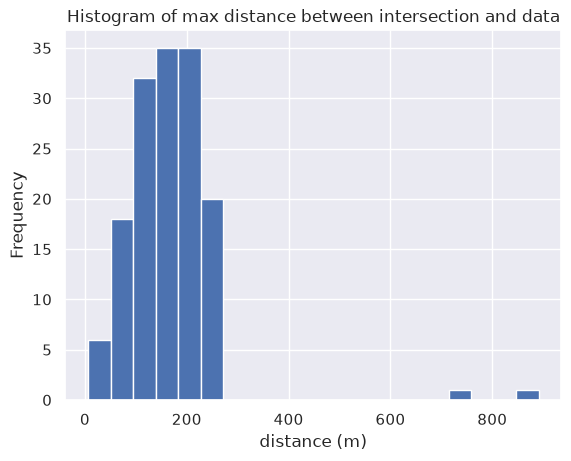
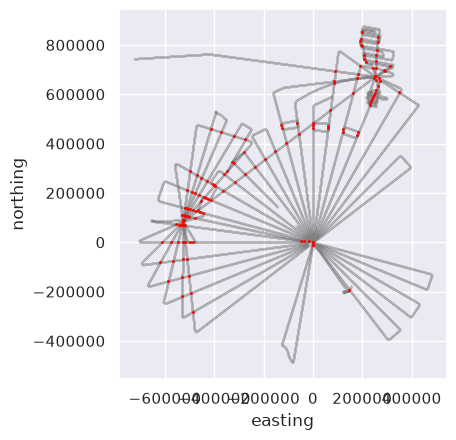
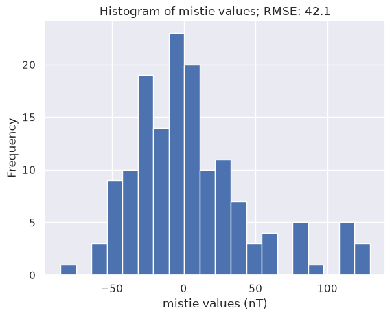
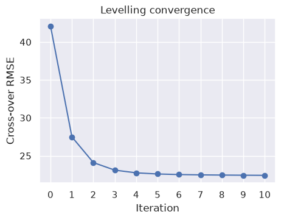
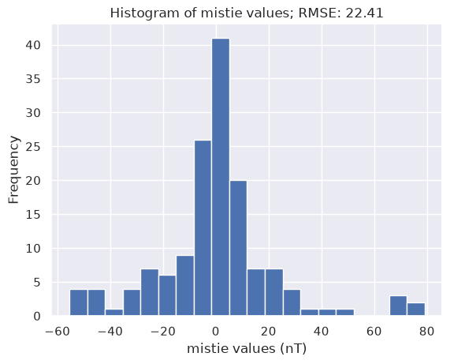
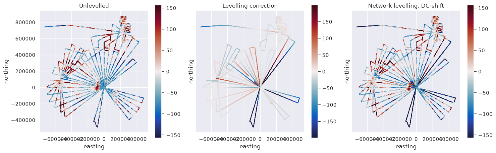
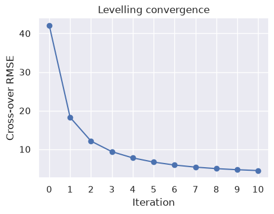
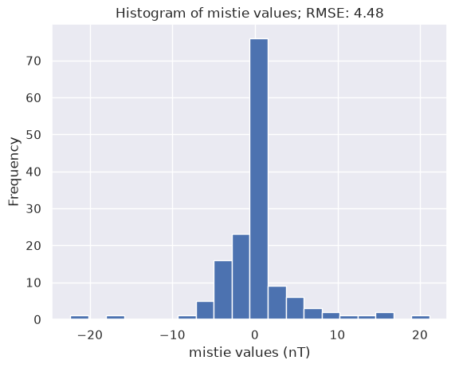
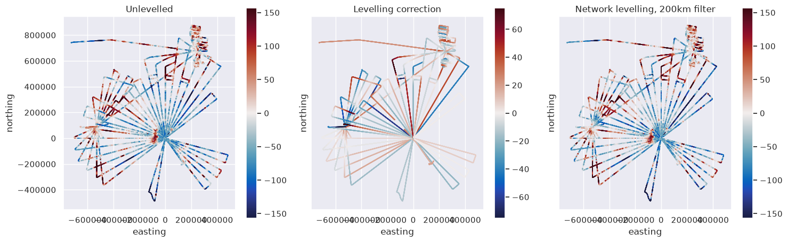

PolarGAP aeromagnetic levelling#
[1]:
%load_ext autoreload
%autoreload 2
import logging
import cmocean
import matplotlib.pyplot as plt
import pandas as pd
import verde as vd
import airbornegeo
# setup logging to get some additional info from the airbornegeo functions
logging.getLogger("airbornegeo").setLevel("INFO")
logging.basicConfig()
Load data#
[2]:
data_df = pd.read_csv("data/PolarGAP_magnetic_survey_blocked.csv")
data_df = data_df.drop(columns="line")
data_df = data_df.rename(
columns={
"MagB30RTC": "unlevelled_tfa",
"MagL_B30RTC": "published_levelled_tfa",
}
)
data_df = data_df[
[
"easting",
"northing",
"Elev",
"distance_along_flight",
"unixtime",
"flight",
"published_levelling_correction",
"unlevelled_tfa",
"published_levelled_tfa",
]
]
data_df = data_df.sort_values(["flight", "unixtime"])
data_df = data_df.dropna(subset=["unlevelled_tfa", "Elev"], how="any")
data_df.head()
[2]:
| easting | northing | Elev | distance_along_flight | unixtime | flight | published_levelling_correction | unlevelled_tfa | published_levelled_tfa | |
|---|---|---|---|---|---|---|---|---|---|
| 6 | -726977.495045 | 741483.042592 | 423.460 | 3247.624650 | 1.450202e+09 | 1 | 0.0 | -83.880 | -83.880 |
| 7 | -726470.616701 | 741599.990804 | 463.925 | 3767.844206 | 1.450202e+09 | 1 | 0.0 | -82.915 | -82.915 |
| 8 | -725988.389576 | 741687.954909 | 498.990 | 4258.101493 | 1.450202e+09 | 1 | 0.0 | -84.850 | -84.850 |
| 9 | -725519.822728 | 741766.773750 | 524.450 | 4733.254367 | 1.450202e+09 | 1 | 0.0 | -85.960 | -85.960 |
| 10 | -725011.350434 | 741849.901747 | 552.655 | 5248.482927 | 1.450202e+09 | 1 | 0.0 | -86.505 | -86.505 |
[ ]:
# Wrap loaded data in a Survey object
survey = airbornegeo.Survey(
data_df,
line_column="flight",
distance_column="distance_along_flight",
)
survey
[3]:
data_df.describe()
[3]:
| easting | northing | Elev | distance_along_flight | unixtime | flight | published_levelling_correction | unlevelled_tfa | published_levelled_tfa | |
|---|---|---|---|---|---|---|---|---|---|
| count | 64895.000000 | 64895.000000 | 64895.000000 | 6.489500e+04 | 6.489500e+04 | 64895.000000 | 64895.000000 | 64895.000000 | 64895.000000 |
| mean | -105541.066793 | 205563.587994 | 2919.828885 | 5.007962e+05 | 1.451686e+09 | 18.412867 | -0.606166 | -7.212939 | -7.819175 |
| std | 292675.389379 | 309282.559911 | 456.844799 | 2.844486e+05 | 8.926196e+05 | 10.204416 | 23.026873 | 80.326959 | 78.139104 |
| min | -726977.495045 | -486226.506678 | 423.460000 | 2.380619e+02 | 1.450202e+09 | 1.000000 | -165.330000 | -358.670000 | -358.670000 |
| 25% | -371123.439905 | -24624.796781 | 2806.292500 | 2.587746e+05 | 1.451050e+09 | 10.000000 | -10.820000 | -60.450000 | -59.590000 |
| 50% | -63879.450095 | 152635.147254 | 2927.190000 | 4.882867e+05 | 1.451600e+09 | 18.000000 | 0.000000 | -22.250000 | -22.860000 |
| 75% | 142273.736001 | 443415.225314 | 3211.560000 | 7.356324e+05 | 1.452472e+09 | 27.000000 | 9.100000 | 32.980000 | 28.435000 |
| max | 481430.890988 | 876164.436520 | 4326.505000 | 1.094965e+06 | 1.453326e+09 | 36.000000 | 154.105000 | 535.490000 | 545.605000 |
[ ]:
survey.plot(color_by="flight", cmap="rainbow", title="Flights", s=0.02)
Cross-over levelling#
Find intersections#
[ ]:
survey.create_intersection_table(
method="network",
buffer_dist=500,
proximity_dist=500,
cutoff_dist=1e3,
block_size=5e3,
min_spacing=10e3,
)
inters = survey.intersections
inters
[ ]:
survey.lines_without_intersections()
[7]:
ax = inters.max_dist.plot.hist(bins=20)
ax.set_xlabel("distance (m)")
ax.set_title("Histogram of max distance between intersection and data")
[7]:
Text(0.5, 1.0, 'Histogram of max distance between intersection and data')

[8]:
ax = data_df.plot.scatter(
"easting",
"northing",
color="gray",
s=0.001,
)
inters.plot.scatter(
"easting",
"northing",
color="red",
s=1,
ax=ax,
)
ax.set_aspect("equal")

Add intersections as rows to the dataframe#
[ ]:
survey.interpolate_intersections(
to_interp="unlevelled_tfa",
interp_on="distance_along_flight",
method="linear",
extrapolate=True,
)
inters = survey.intersections
inters
[ ]:
survey.lines_without_intersections()
Calculate initial cross-over errors#
[ ]:
survey.calculate_crossover_errors(
data_col="unlevelled_tfa",
)
inters = survey.intersections
inters.head()
[12]:
ax = inters.crossover_error_0.plot.hist(bins=20)
ax.set_xlabel("mistie values (nT)")
ax.set_title(
f"Histogram of mistie values; RMSE: {round(airbornegeo.rmse(inters.crossover_error_0), 2)}"
);

[15]:
fig = airbornegeo.plotly_points(
data_df,
color_col="unlevelled_tfa",
hover_cols=["flight"],
cmap="viridis",
size=3,
)
fig = airbornegeo.plotly_points(
inters,
fig=fig,
color_col=inters.columns[-1],
hover_cols=["line1", "line2", "is_buffered"],
size=8,
edge_width=0.2,
cmap="balance",
robust=False,
)
fig.show()
Data type cannot be displayed: application/vnd.plotly.v1+json
Level with a trend#
[ ]:
survey.crossover_network_levelling(
data_col="unlevelled_tfa",
levelled_col="levelled_trend",
degree=1,
max_iterations=20,
plot_dynamic_convergence=True,
)
inters_trend = survey.intersections
[17]:
airbornegeo.plot_levelling_convergence(inters_trend)

[18]:
ax = inters_trend[inters_trend.columns[-1]].plot.hist(bins=20)
ax.set_xlabel("mistie values (nT)")
ax.set_title(
f"Histogram of mistie values; RMSE: {round(airbornegeo.rmse(inters_trend[inters_trend.columns[-1]]), 2)}"
);

[19]:
fig, axs = plt.subplots(1, 3, figsize=(15, 40))
data_df["levelling_correction"] = data_df.levelled_trend - data_df.unlevelled_tfa
df = data_df
max_abs = vd.maxabs(df.unlevelled_tfa, percentile=95)
ax = df.plot.scatter(
"easting",
"northing",
c="unlevelled_tfa",
s=0.1,
ax=axs[0],
cmap=cmocean.cm.balance,
vmin=-max_abs,
vmax=max_abs,
colorbar=False,
title="Unlevelled",
)
ax.set_aspect("equal")
plt.colorbar(ax.collections[0], ax=ax, shrink=0.1)
max_abs_level_corr = vd.maxabs(df.levelling_correction, percentile=95)
ax = df.plot.scatter(
"easting",
"northing",
c="levelling_correction",
s=0.1,
ax=axs[1],
cmap=cmocean.cm.balance,
vmin=-max_abs_level_corr,
vmax=max_abs_level_corr,
colorbar=False,
title="Levelling correction",
)
ax.set_yticks([])
ax.set_aspect("equal")
plt.colorbar(ax.collections[0], ax=ax, shrink=0.1)
ax = df.plot.scatter(
"easting",
"northing",
c="levelled_trend",
s=0.1,
ax=axs[2],
cmap=cmocean.cm.balance,
vmin=-max_abs,
vmax=max_abs,
colorbar=False,
title="Network levelling, DC-shift",
)
ax.set_yticks([])
ax.set_aspect("equal")
plt.colorbar(ax.collections[0], ax=ax, shrink=0.1)
plt.tight_layout()
plt.show()

[20]:
fig = airbornegeo.plotly_points(
data_df,
color_col="levelled_trend",
hover_cols=["flight"],
cmap="viridis",
size=3,
)
fig = airbornegeo.plotly_points(
inters_trend,
fig=fig,
color_col=inters_trend.columns[-1],
hover_cols=["line1", "line2", "is_buffered"],
size=8,
edge_width=0.2,
cmap="balance",
robust=False,
)
fig.show()
Data type cannot be displayed: application/vnd.plotly.v1+json
Level with a filter#
[ ]:
# Reset to baseline intersections before second branch
survey.intersections = inters
survey.crossover_network_levelling(
data_col="unlevelled_tfa",
levelled_col="levelled_filter",
filter_kwargs={"filter_width": 200e3},
max_iterations=20,
plot_dynamic_convergence=True,
)
inters_filter = survey.intersections
[22]:
airbornegeo.plot_levelling_convergence(inters_filter)

[23]:
ax = inters_filter[inters_filter.columns[-1]].plot.hist(bins=20)
ax.set_xlabel("mistie values (nT)")
ax.set_title(
f"Histogram of mistie values; RMSE: {round(airbornegeo.rmse(inters_filter[inters_filter.columns[-1]]), 2)}"
);

[24]:
fig, axs = plt.subplots(1, 3, figsize=(15, 40))
data_df["levelling_correction"] = data_df.levelled_filter - data_df.unlevelled_tfa
df = data_df
max_abs = vd.maxabs(df.unlevelled_tfa, percentile=95)
ax = df.plot.scatter(
"easting",
"northing",
c="unlevelled_tfa",
s=0.1,
ax=axs[0],
cmap=cmocean.cm.balance,
vmin=-max_abs,
vmax=max_abs,
colorbar=False,
title="Unlevelled",
)
ax.set_aspect("equal")
plt.colorbar(ax.collections[0], ax=ax, shrink=0.1)
max_abs_level_corr = vd.maxabs(df.levelling_correction, percentile=99.5)
ax = df.plot.scatter(
"easting",
"northing",
c="levelling_correction",
s=0.1,
ax=axs[1],
cmap=cmocean.cm.balance,
vmin=-max_abs_level_corr,
vmax=max_abs_level_corr,
colorbar=False,
title="Levelling correction",
)
ax.set_yticks([])
ax.set_aspect("equal")
plt.colorbar(ax.collections[0], ax=ax, shrink=0.1)
ax = df.plot.scatter(
"easting",
"northing",
c="levelled_filter",
s=0.1,
ax=axs[2],
cmap=cmocean.cm.balance,
vmin=-max_abs,
vmax=max_abs,
colorbar=False,
title="Network levelling, 200km filter",
)
ax.set_yticks([])
ax.set_aspect("equal")
plt.colorbar(ax.collections[0], ax=ax, shrink=0.1)
plt.tight_layout()
plt.show()

[25]:
fig = airbornegeo.plotly_points(
data_df,
color_col="levelled_filter",
hover_cols=["flight"],
cmap="viridis",
size=3,
)
fig = airbornegeo.plotly_points(
inters_filter,
fig=fig,
color_col=inters_filter.columns[-1],
hover_cols=["line1", "line2", "is_buffered"],
size=8,
edge_width=0.2,
cmap="balance",
robust=False,
)
fig.show()
Data type cannot be displayed: application/vnd.plotly.v1+json
[ ]: